VVFS – Volume Verification Failure Sample
Assay Processing Flag
Complaint Description
Volume Verification Failure Sample – The volume verification check for the TCR + Sample indicates the volume was either too low or too high.
The difference in the LLD values for the "Pipettor Dispense Sample PreLLD" and the "Pipettor Dispense Sample PostLLD" does not fall within the appropriate range for a Sample Dispense.
Technical Support
Questions for the Customer
- Does the VVFS flag correspond to the Sample or to the Control? If the VVFS error corresponds to the Sample – which Sample type?
- Is the VVFS flag applicable to one specific assay or to multiple assays?
- If the VVFS flag corresponds to SarsCov2, is there a capped or uncapped WF? If there is an uncapped WF, was there a pierceable cap left on it?
- Which tips are currently used?

Note: If the tips are validated or an alternative type, document the Tip reference number and the Lot number). - If customer inquires about a VVFS flag, customer logs will be required for review purposes, to determine if the issue is related to the Sample (i.e., bubbles, viscous, cap was left on) or if this is an instrument-related problem.
Log Review
- Review the Run reports. What is the percentage of VVFS?
Note: <1-2% - this percentage is normal and is likely attributed to viscous samples. - Review the following Panther curves: Sample - Aspiration and Dispense curves. / c-LLD TCR, CLLD Sample.
Example 1: VVFS Due to Viscous Sample
Example 2: Cap Left on Sample (SarsCov2 TMA Uncapped WF)
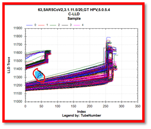
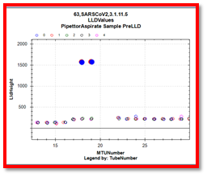
Example 3: TCR in MTU (Left) and TCR in Sample Tube (Right)
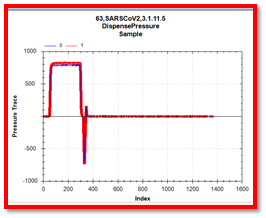
Examples of Pipettor Issues ( = Dispatch)
Scenario: c-LLD TCR looks bad.
Examples 1 and : Normal c-LLD TCR (for Comparison)
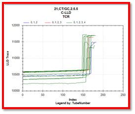
Example 3: c-LLD TCR (Brushless Pipettor Problem)
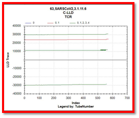
Example 4: Normal C-LLD (with Bad c-LLD Sample)
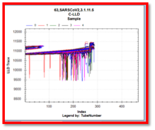
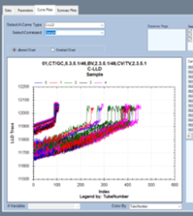
Bad capacitive contact leading to noisy Sample pipettor Level Sense
Example 5: Bad Capacitive Circuit Contact
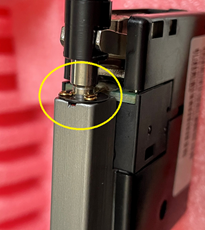
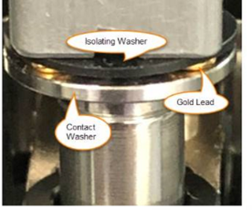
Example 6: Normal C-LLD (Left) and Bad c-LLD Sample
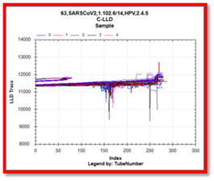
Field Service
Particulate in Sample
Resolution:
Remove the mucoid from the sample, then transfer to a new sample tube and retest the sample.
Test:
Verify the sample does not have a mucoid cap or cotton pile in the tube.
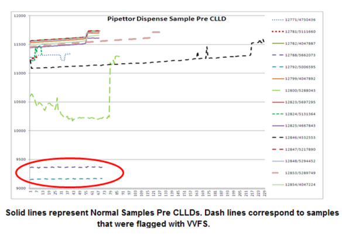
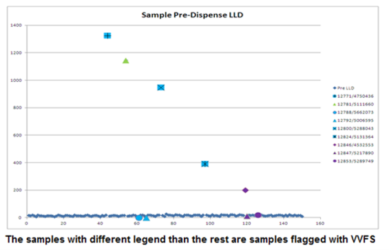
Foam in the MTU
Resolution:
- Do not shake the sample. Invert the sample gently.
- Replace with a new sample (or sample tube).
- Rerun the sample.
Test:
- Ensure there is no foam or air bubbles in the sample tubes.
- Verify the RDFS flag was triggered.
- Verify that the sample has a sufficient level of fluid.
Leaky DiTi
Resolution:
- Replace the DiTi then repeat the Pressure Integrity test.
- Replace the pipettor arm then repeat Pressure Integrity test.
Test:
Perform the Pressure Integrity check using the Service software.
Improper Tip Pick
Resolution:
Re-teach the pipettor.
Test:
Verify the Sample pipettor alignment using the Service software.
Faulty LLD sensor
Resolution:
Replace the Pipettor.
Test:
Check the LLD curve then verify the slope is not “zeroed”.
Pipettor Gold leads
Resolution:
- Clean the gold leads of the Pipettor.
- Adjust the gold leads of the Pipettor.
Test:
- Ensure the gold leads of the Pipettor are not dirty.
- Ensure the gold leads are making good contact with the DiTi.
VVFS Due to Sample Quality Examples
Example 1: VVFS (Due to Sample Quality)
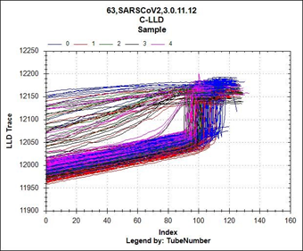
Example 2: VVFS (Due to Sample Quality)
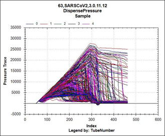
Looking at your sample cLLD curve, you can see that tube 0 of the MTU is the tube that is frequently triggering early, and you can see that the frequency it is starting at is much lower than the other tubes. If I take out SARS (which has the extra level sense in the open tube), I think it looks even clearer:
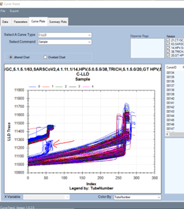
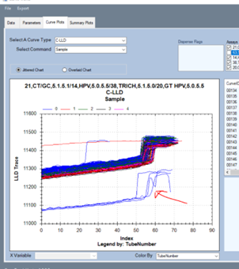
TCR level sense looks normal, so I do not think it is an issue with the electronics within the pipettor (although, it wouldn’t hurt to reteach the sample pipettor to the TCR mixer, verifying the correct tool is being used, the slope to the level sense line could mean the pipettor is too close to the edge of the TCR bottle):
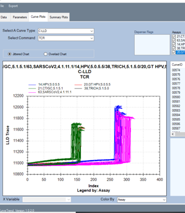
I think what might be happening is the pipettor is too close to the edge of the MTU tube, and so it is throwing off the LLD frequency at the beginning of the cLLD move.
I would tell the FSE Field Service Engineer. to go in and check the following:
Field Service Engineer. to go in and check the following:
-
Verify the cLLD upgrade has been completed (TB-01684)
-
Sample Dispense Slot: Is the MTU being held in place, or is the spring allowing the MTU to “walk” when the sample mixer is going.
-
Look at the LD to Sample Dispense Slot teaching. Is the MTU being pushed far enough back into the sample dispense slot (or too far back)?
-
Perform a cLLD test at the Sample dispense slot, position 1, and watch the pipettor- does it look like it is getting too close to the edge of the MTU?
-
Reteach the sample pipettor to the sample dispense slot
-
Reteach the LD to the sample dispense slot.
-
Run another cLLD test at sample dispense slot 1. Did the performance improve?
Instructions to Graph cLLD Tests Performed in SSW
-
To get your results, navigate to C:\Panther\Panther Service Software\Log
Search for files named Right-LLD-ZPos.log and Right-LLD-Values_TCR Carousel-Track1-Tube1.log. Refer to image below:
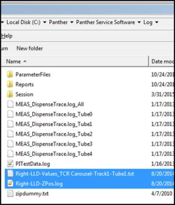
-
Graph the LLD signal with the first file.
 button at the top of the page to send feedback, comments, or change requests.
button at the top of the page to send feedback, comments, or change requests.